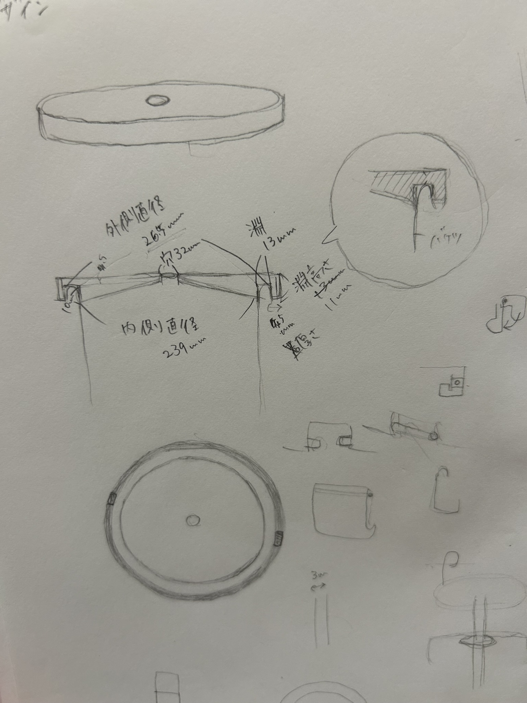
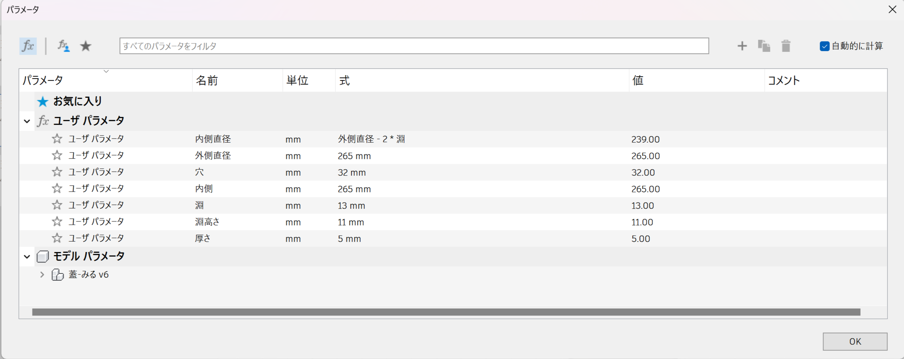

設計
手書き設計図

前回測定したバケツのサイズに加えて、内側直径や、淵の厚さ、高さを細かく計測しました。
軸を通す穴を少し大きめにし、蓋の裏側に傾斜をつけることで、排水にも利用できるようにしました。
（洗うときに水漏れが起きないよう、軸側に穴をカバーできるようなストッパー（？）をつけてもらう必要あり。）
また、バケツに元々ついている取っ手を避けるような凹み部分と、蓋が外れないようにするための引っ掛かり部分も作ります。
パラメータ設定

設計図をもとに、以上のようなパラメータを設定しました。